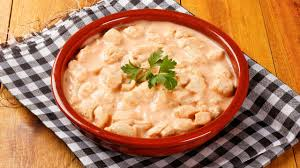
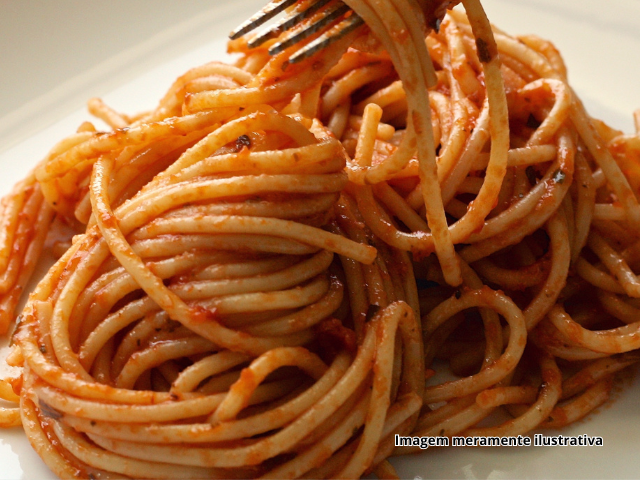
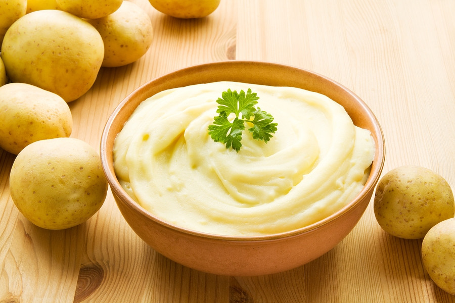

Receitas Republicanas
Strogonoff de Frango
Ingredientes
- 500g de peito de frango cortado em cubos
- 1 cebola picada
- 2 dentes de alho picados
- 2 colheres de sopa de ketchup
- 2 colheres de sopa de mostarda
- 1 caixa de creme de leite
- Sal e pimenta a gosto
- Óleo para refogar
Modo de Preparo
- Refogue a cebola e o alho no óleo até dourar.
- Adicione o frango e cozinhe até ficar dourado.
- Tempere com sal e pimenta.
- Adicione ketchup e mostarda, misture bem.
- Acrescente o creme de leite e cozinhe em fogo baixo por alguns minutos.
- Sirva com arroz branco e batata palha.

uhehuehuehue
Macarrão
Ingredientes
- 500g de macarrão de sua preferência
- 400g de carne moída
- 1 cebola picada
- 2 dentes de alho picados
- 2 xícaras de molho de tomate
- Sal, pimenta e orégano a gosto
- Queijo ralado para polvilhar
Modo de Preparo
- Cozinhe o macarrão conforme as instruções da embalagem.
- Refogue cebola e alho, adicione a carne moída e cozinhe bem.
- Acrescente o molho de tomate e tempere com sal, pimenta e orégano.
- Escorra o macarrão e misture com o molho.
- Sirva com queijo ralado por cima.

uhehuehuehue
Empanado de Frango
Ingredientes
- 500g de filé de frango
- 2 ovos batidos
- Farinha de trigo
- Farinha de rosca
- Sal e pimenta a gosto
- Óleo para fritar
Modo de Preparo
- Tempere o frango com sal e pimenta.
- Passe os filés na farinha de trigo, depois no ovo batido e por último na farinha de rosca.
- Frite em óleo quente até dourar dos dois lados.
- Escorra em papel toalha e sirva quente.
uhehuehuehue
Purê
Ingredientes
- 5 batatas médias
- 2 colheres de sopa de manteiga
- 1/2 xícara de leite
- Sal a gosto
Modo de Preparo
- Cozinhe as batatas até ficarem macias.
- Esprema as batatas ainda quentes.
- Misture manteiga, leite e sal, mexendo até obter um creme liso.
- Sirva como acompanhamento.

uhehuehuehue